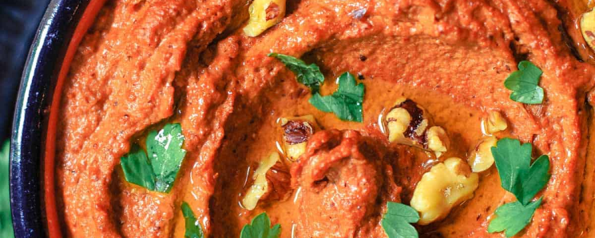

Muhammara

Source for image and recipe: https://www.themediterraneandish.com/muhammara-recipe-roasted-red-pepper-dip/
Ingredients
- 2 red bell peppers
- 4 tbs of olive oil
- 1/4 lb shelled toasted walnuts
- 1 garlic clove roughly chopped
- 2 1/2 tbs tomato paste
- 3/4 cup bread crumbs
- 2 tbs pomegranate molasses
- 1 tsp Aleppo pepper
- 1/2 tsp sugar
- 1 tsp sumac
- 1/2 tsp salt
- 1/2 tsp cayenne pepper
Instructions
- Preheat the oven to 425 degrees F.
- Brush the bell peppers with 1 tablespoon of olive oil, and place in a lightly oiled oven-safe pan or cast-iron skillet. Roast the peppers in the 425 degrees F heated oven for 30 minutes or so, turning them over once or twice.
- Remove from the oven and place the peppers in a bowl. Cover with plastic wrap for a few minutes. This traps the steam from the roasted peppers, making them easy to peel. When cool enough to handle, simply peel the peppers, remove the seeds and slice the peppers into small strips.
- Now in the bowl of a large food processor, combine the roasted red pepper strips with 3 tablespoon extra virgin olive oil, walnuts, tomato paste, bread crumbs, pomegranate molasses, Aleppo pepper, sugar, sumac, salt and cayenne. Blend into a smooth paste.
- Transfer to a serving bowl. You may cover the muhammara and refrigerate, but be sure to bring the dip to room temperature before serving.
- When ready to serve, top the dip with a drizzle of extra virgin olive oil, and garnish with a little more walnuts and fresh parsley, if you like. Serve with pita bread or pita chips. Enjoy!